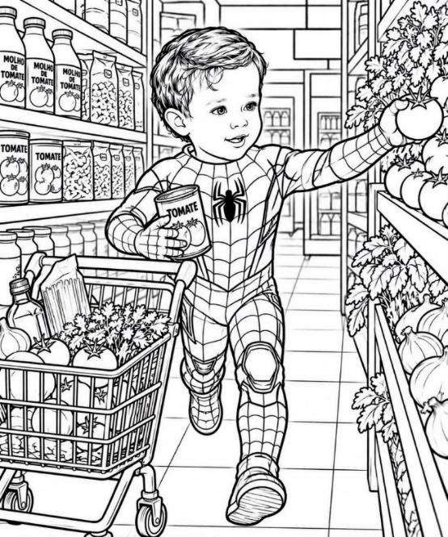

Entre Prateleiras e Boas Lembranças

Antes de cada receita, havia uma visita ao supermercado, uma sacola de ingredientes e um coração cheio de amor para transformar tudo em deliciosas memórias para a família.
Zelinda sempre faz questão de lembrar que, sem a ajuda da família, nada teria sido possível. Ao longo da vida, foram muitas as mãos que se uniram às dela, muitos os gestos de carinho e tantas histórias que ficaram guardadas na memória. Algumas, ela gosta especialmente de repetir, como a aventura que viveu com o neto Thales.
Certo dia, os dois foram ao supermercado comprar os ingredientes para o almoço. O que deveria ser apenas uma simples ida às compras acabou se transformando em uma verdadeira aventura!
Cheio de energia e curiosidade, Thales saía correndo entre as prateleiras, explorando um corredor aqui, outro ali. Enquanto Zelinda procurava os ingredientes de que precisava, o pequeno parecia ter seus próprios planos para aquele passeio. A avó tentava acompanhá-lo, sem saber se cuidava das compras ou se mantinha o neto ao alcance dos olhos.
No fim, entre a correria, os sustos e as risadas, a compra do almoço rendeu muito mais do que os ingredientes que foram buscar. Rendeu uma daquelas histórias que a família gosta de ouvir de novo, mesmo depois de tantos anos.
Zelinda conta esse episódio com o carinho de quem sabe que são justamente esses momentos, aparentemente tão simples, que acabam se tornando preciosas lembranças de família. Afinal, com Thales por perto, até uma ida ao supermercado podia se transformar em uma grande aventura!